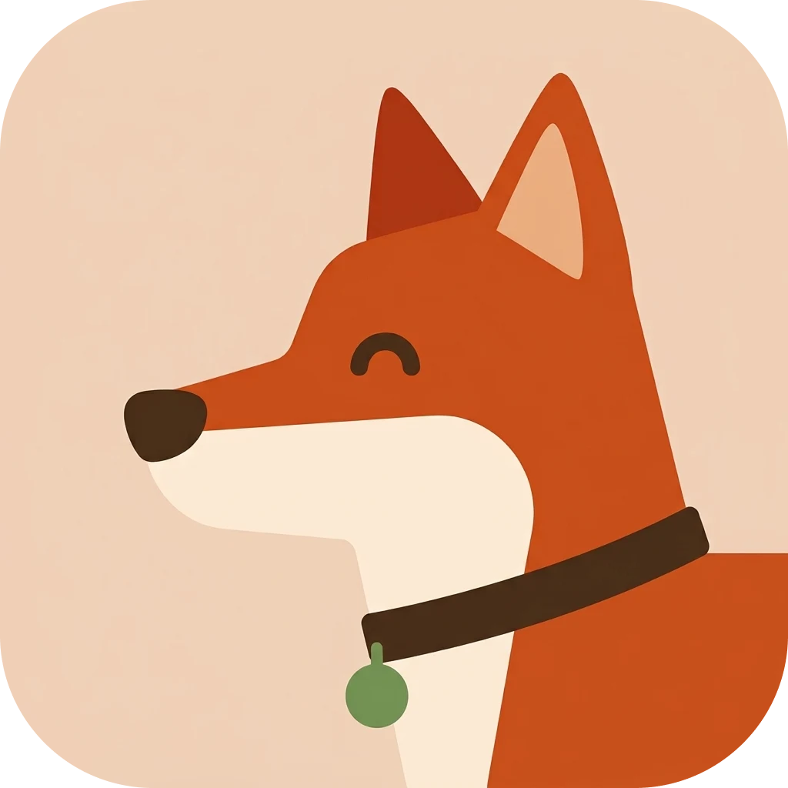
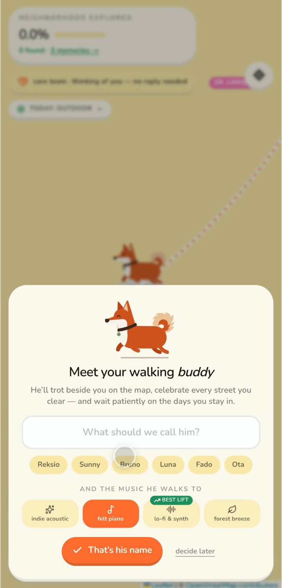
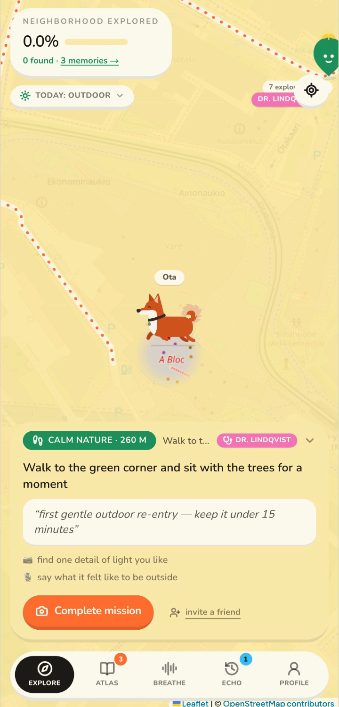
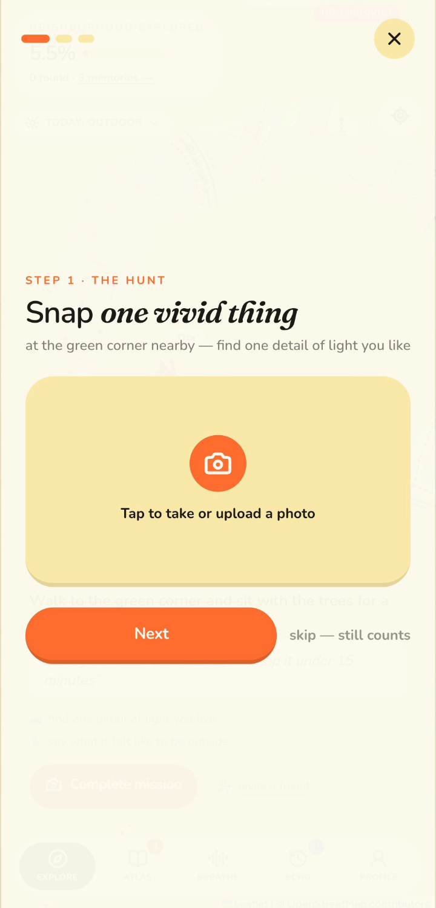
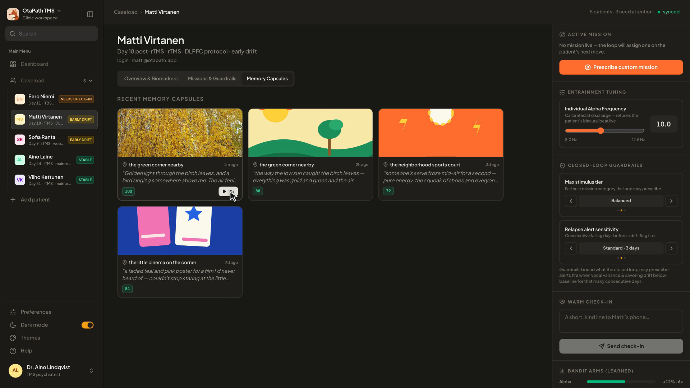
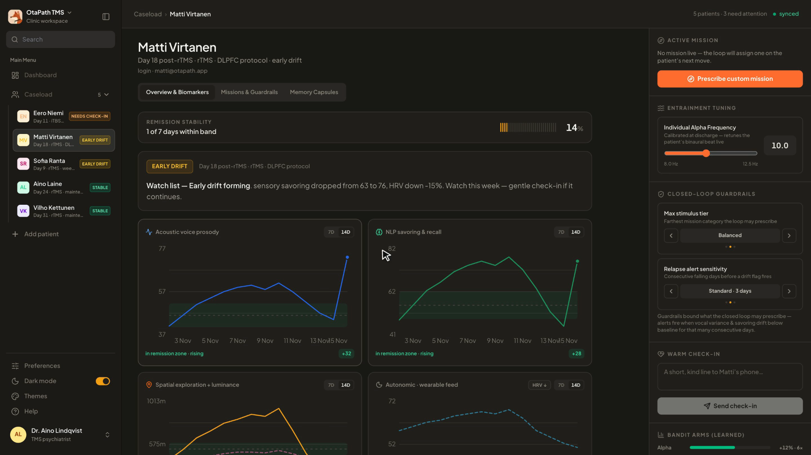
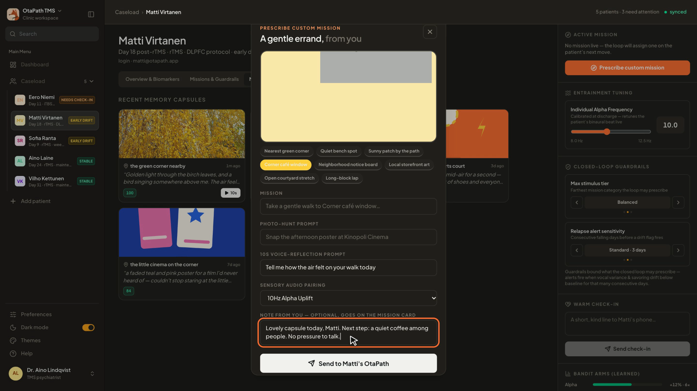
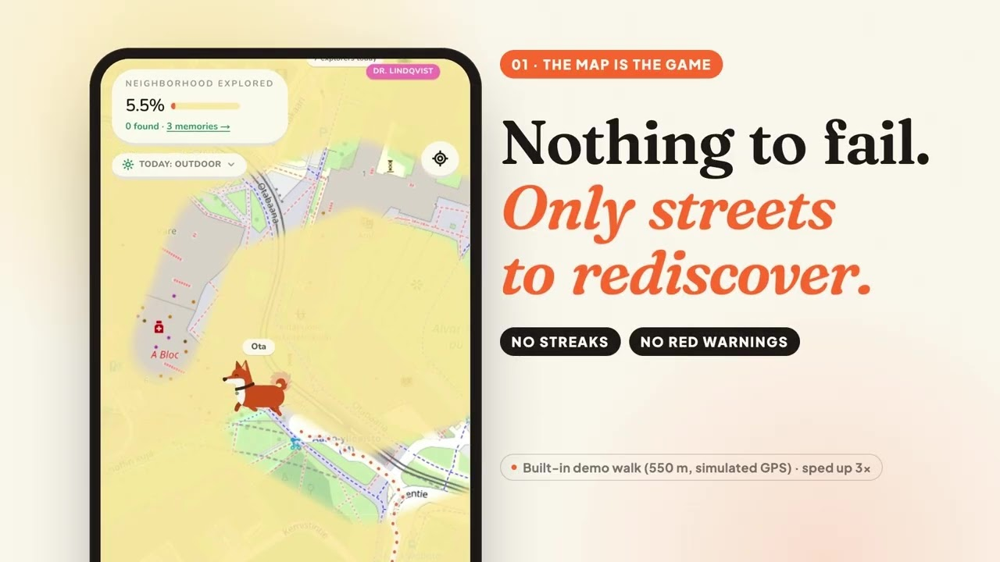

A warm walking companion for the fragile weeks after TMS treatment for depression.
Step outside. Feel brighter.

Hospitals treat severe depression with transcranial magnetic stimulation (TMS) — daily clinic visits, then discharge. Aalto asks for maintenance at home, as a closed loop: sense how a patient is doing, respond with something that helps, and learn what works for that person.
Could it really help people stay well at home?
Would someone recovering from depression use it daily?
Clever home sensing and per-person learning.
How original and delightful is the idea?
TMS can lift people out of severe depression. Then the daily visits end — and the support structure disappears overnight.
relapse within a year of remission (figure used in our demo).
Nobody sees the early drift. Questionnaires and streak apps feel like homework — and guilt on a bad day.
That gap between discharge and relapse — that is the window OtaPath is built for.
No questionnaires, no streaks, no guilt. A small walk outside with a companion — and the check-in is just a photo and a 10-second voice note.



Ota trots beside you on a fog-of-war map. Every street walked clears golden mist — nothing to fail, only neighbourhood to rediscover.
"Walk to the green corner…" — gentle quests sized to today's energy, with a photo-hunt and a voice-reflection prompt.
One vivid photo + a 10-second voice note, pinned to the map. That is the whole check-in. Skipping still counts.
Vocal energy, pitch variation, speech-to-pause ratio, initiation latency — computed in the browser.
Luminance and colour vibrancy of the captured moment.
Sensory detail, themes and emotional tone of the spoken reflection (OpenAI or local heuristics).
Distance walked, fog cleared, places visited.

Memory capsules — each a place, a photo, a voice note and its signals.
The dashboard turns capsules into trends: voice prosody, sensory recall, spatial exploration, wearable feed — each against the patient's baseline band.
A rule-based triage flags Stable / Early drift / Intervention on a cohort view, with context flags (illness, housebound) adjusting the summary.

Capsule signals update the daily record.
Drift alert surfaces on the caseload list.
Doctor prescribes a quest or sends a warm check-in.
Bandit scores which missions & audio helped.

A gentle errand, from you. The clinician picks a place type, writes the mission, photo-hunt and reflection prompt, pairs an audio mood — and it lands on the patient's phone seconds later.
Guardrails, not autopilot: max stimulus tier, Individual Alpha Frequency entrainment bounds, and a relapse-alert sensitivity the clinician controls. The loop advises — the human decides.
| Patient app + portal | Next.js 16, React 19, TypeScript, Tailwind 4, Zustand |
| Map & missions | Leaflet, OpenStreetMap, Overpass places, OSRM walking routes (+ offline fallbacks) |
| On-device sensing | Web Audio + MediaRecorder for acoustic features, Canvas for image analysis |
| Backend | Supabase Postgres + Auth + Storage, Row-Level Security, API sync |
| Optional AI | OpenAI reflection analysis, ElevenLabs music/narration — heuristic & synth fallbacks |
| Demo video | Remotion, Playwright captures, Kokoro narration, Whisper alignment |
Heavy analysis runs in the browser or behind RLS; audio is cached, not endlessly stored. Synthetic demo patients only.
No ElevenLabs key? On-device Web Audio synthesis. No Overpass? Procedural destinations. The app works offline-ish by default.
Map, capsules, audio — sensing in-browser.
Server-side Supabase client, optional AI calls.
Postgres + RLS, Auth, audio storage.
Trends, triage, missions, check-ins.
Matti leaves a voice note at the birch grove. Dr. Lindqvist hears the drift, prescribes the next quest — and it lands on the phone live.

▶One small walk at a time.
OtaPath never asks how you feel. It notices.
Team ScoobaNi · Junction 2026 · Beyond the Clinic (Aalto University) · github.com/0xKomar/OtaPath